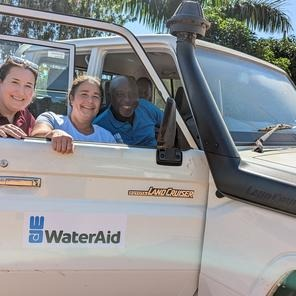
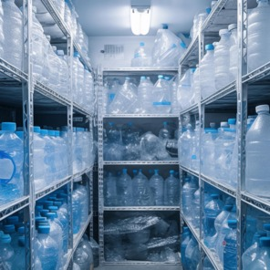

WaterAid Press Release
Carlsberg and WaterAid begin collaboration to fight water shortages in southern India
New research shows how extreme weather changes are devastating millions of lives
New report on women's empowerment
BLOG: Visit to Uganda - new projects underway
WaterAid uses chess games to highlight menstrual health
9 things to keep in mind in a water crisis